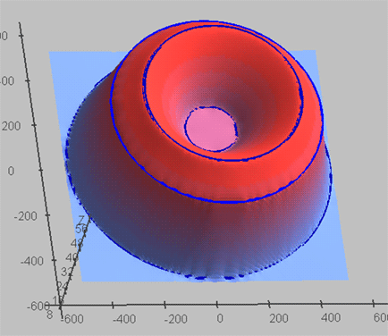
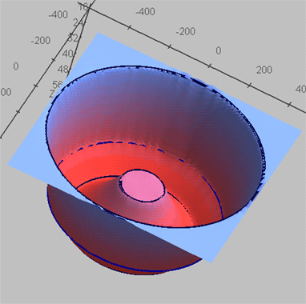

Pic 1. View N1.

Pic 2. View N2.
This result was obtained with "surfit/examples/test/map_iso.tcl" script.
Some comments to script:
iso1.xy, iso3.xy and iso4.xy are for interpolation iso2.xy is for approximation. # load libsurfit[info sharedlibextension] # resulting surface must have name "map_iso" set map_name map_iso # reading isolines from 2-column text files isos_read iso1.xy iso1 10 wisos_read iso2.xy iso2 40 10 isos_read iso3.xy iso3 50 isos_read iso4.xy iso4 30 # setting surface behaviour between isolines completer_set 1 1.6 # constructing surfit_grid grid_auto 10 10 # running CMOFS algorithm solve # unloading surfit_grid from memory grid_unload # saving results to binary ROFF file file_save map_iso.dat
surfit-1.0.0pre